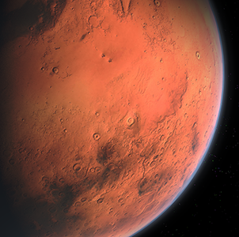

Virtual reality is the new reality! Video games and virtual reality seems to be the new popular escape from the actual world when we don't want to face reality. I feel that VR and and actual reality will cause much mental and social confusion, in the future.Humans will use robotics as a means of health and self body modifcation. Robotics can help with physical illnesses aready. I picture roborics becoming so advanced that we will use it to fix our body parts either for functuality or beauty. People and roboics will become one.Robots are becoming more human like daily. By 2100, there will be functional humanoids. with the quick advancement or current humanoids, I figure by 2100, they will be so advanced that robots will seem human like. The earth is in our hands. Let's takes care of it! Keep it safe and clean so future generations can live and enjoy this beautiful planet.Nature is important for all living creatures! We get so many great resources from nature, whether it be food, shelter, or just enjoying outdoor activities. If we keep treating the planet the way we do, nature will slowly die and us along with it. Remember, humans are a part of nature too. We need it to live!

NASA is already exploring the possibilities of migration to Mars. They have even found signs of of a possibility to have life form there. Nasa is already planning to send rovers to mars in 2020 in hopes to find signs of life after much past research has been collected. So in 2100, it could be possible to migrate there. If this does happen, let's hope that it is not due to our own over-crowded and over-polluted planet. Instead due to a new way to create a new civilization, but with the way we treat this planet already, is it really a good idea? Or will we be as self-destructive to Mars as we are to Earth?